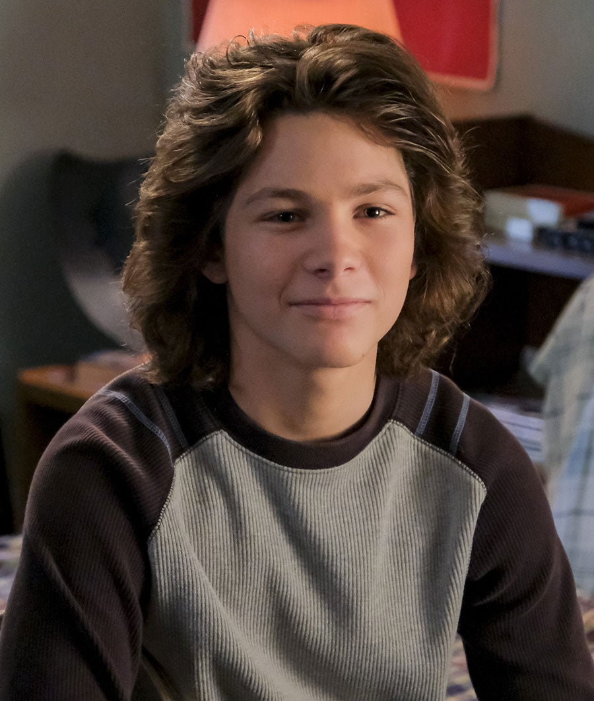

Sheldon cooper

Sheldon a 9 ans dans les deux premières saisons et 10 ans dans la saison 3. Il est un enfant d'une intelligence hors norme, mais il a cependant des difficultés relationnelles. Il n'a que très peu d'amis. Comme il le dit, il n'a que deux amis : Tam Nguyen et le Professeur John Sturgis. Mais il en a d'autres : une fille du même âge, tout aussi douée pour les études, nommée Paige avec qui il s'est lié d'amitié à l'université (bien qu'il la perçoive de prime abord comme une rivale dérangeante) et deux autres étudiants avec qui il a joué et mangé. Il est aussi hypocondriaque et a de nombreuses phobies : les maladies, les microbes et les animaux (surtout les chiens).
missy

Elle est la sœur jumelle de Sheldon.
Bien qu'elle se moque souvent de Sheldon, elle adore son frère. Tout comme son frère ainé, Missy se démarque par sa capacité à remarquer beaucoup de choses sur les interactions des autres personnages. Elle possède toutes les compétences émotionnelles et relationnelles qui manquent à Sheldon.
george jr cooper

Il est le grand frère de Sheldon.
Sa scolarité n'est pas le point fort de ce personnage. Les filles de son âge et la musculation sont ses principaux centres d'intérêt. Mais au fur et à mesure, il fait preuve de grandes compétences entreprenariales. Il a l'intelligence d'entreprise, ce que n'a pas Sheldon.
george cooper pere

Il est le père de Sheldon.
Il est entraîneur dans le lycée où Sheldon et Georgie puis Missy étudient.
mary cooper

Elle est la mère de Sheldon.
Elle est très pieuse et travaille dans une église baptiste
meemaw
Elle est la grand-mère de Sheldon.
Mewmaw habite en face de chez les Cooper. Elle a un premier petit ami, John Sturgis, qui la quitte. Puis, elle sort avec l'entraîneur de base-ball de Missy, Dale Ballard. Elle se fait aussi courtiser par le Dr Linkletter, professeur de Sheldon à l'université, où le Dr Sturgis, l'idole de Sheldon, enseigne aussi.